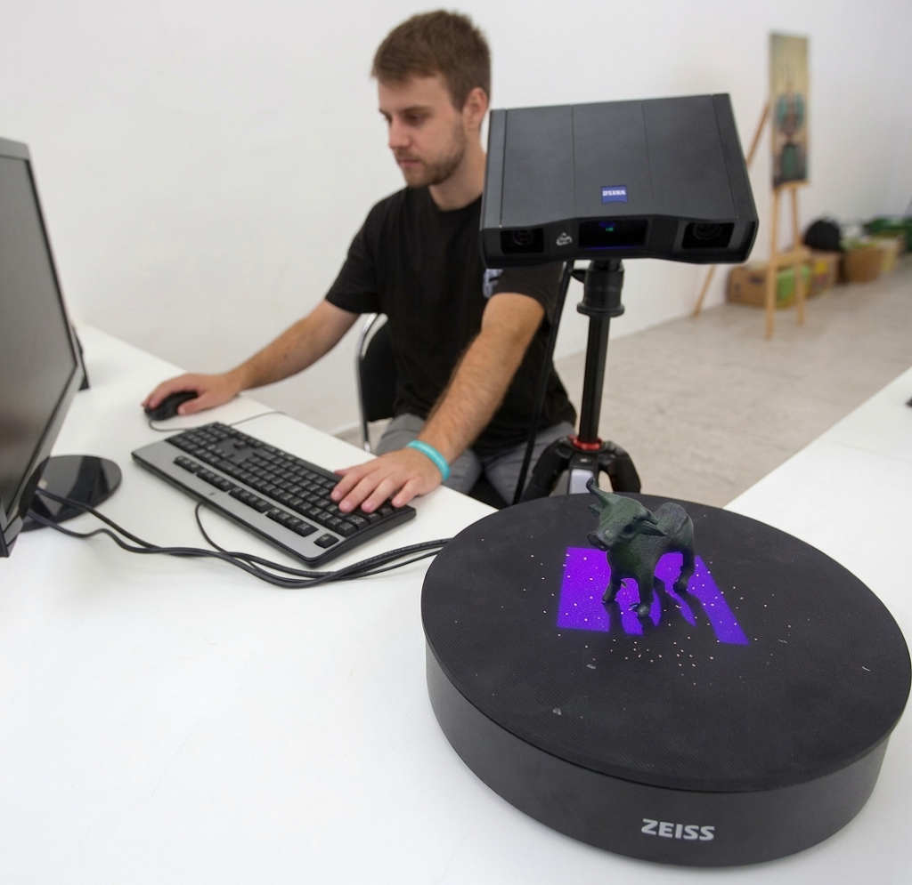

Zajímají mě data, automatizace, digitalizace a kulturní dědictví
Studuji navazující magisterský program na KISKu. Mám vystudovanou estetiku a pedagogiku, osud mě ale nakonec zavál k datům, digitalizaci a technologiím v oblasti kulturního dědictví. Pracuji na digitalizačním pracovišti druhé největší muzejní instituce v České republice (MZM), kde se věnuji 2D a 3D digitalizaci, podpoře odborné činnosti a zpracování digitálních dat.
Od studia na KISKu očekávám získání teoretického i praktického rámce pro práci s daty a digitálními sbírkami. Mým cílem je prohloubit své datové dovednosti a stát se plnohodnotným datovým kurátorem a analytikem.
Projekty
-
3D Galerie objektů
Desktopová appka pro dotykovou obrazovku (TV/monitor) v muzeu, bez připojení k internetu. Návštěvníci si z přehledu vyberou exponát a prstem si s jeho 3D modelem mohou volně otáčet, přibližovat a oddalovat. Otestováno, je potřeba dodělat kioskový mód, aby appka nešla vypnout.
- Three.js
- Electron
- glTF / GLB
-
WeatherNow — předpověď počasí
Rychlá progresivní webová aplikace nad veřejným API s offline podporou a personalizovanými lokacemi.
- TypeScript
- Vite
- Public API
-
Portfolio v1
První verze osobního webu — statická stránka postavená od nuly pro nácvik sémantického HTML a CSS gridu.
- HTML
- CSS
- JavaScript
Studium
1. semestr
ISKM01
Popis předmětu doplnit.
ISKM02
Popis předmětu doplnit.
ISKM03
Popis předmětu doplnit.
ISKM04
Popis předmětu doplnit.
ISKB83
Popis předmětu doplnit.
ISKM55
Popis předmětu doplnit.
AI001
Popis předmětu doplnit.